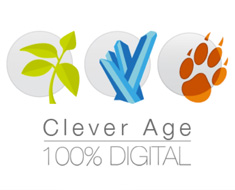
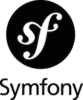
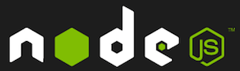

Configuration Discovery avec Symfony2 chez M6Web
sfPot Lyon - le 22 mai 2014
Les protagonistes
Mikael Randy



Thierry Geindre
M6Web

Sommaire
- Configuration Discovery, kezako ?
- Mise à disposition de configuration
- La configuration discovery avec Symfony
Configuration Discovery
- Buzzword bingo
- Agir sur la configuration depuis l'extérieur du projet
- Service de surcharge de configuration externe
- Chez M6Web ?
Configuration discovery avec Symfony
Pour chaque requête / commande :
- Lecture du flux JSON : M6Web / WSClientBundle
- Surcharger la configuration du projet
Surcharge de la configuration Symfony
- Impossible au runtime
- Le container est compilé
Service existant
services:
request_logger:
class: %request_logger.class%
calls:
- [ setLogger, [ @logger ] ]
Configuration du bundle
m6_video_app_launch_client:
services:
request_logger:
id: request_logger
calls:
- [ setFilters, [ !loggerconfig.filters ] ]
- Injection de a valeur contenue dans le json
- Transparent à l'utilisation
Fonctionnement
services:
request_logger:
class: %request_logger.class%
calls:
- [ setLogger, [ @logger ] ]
- Passe de compilation
- Alias du service original : m6_applaunch.%s
- Recréé un service sous l'id original
- Service factory
Configuration complète
m6_video_app_launch_client:
host: 'http://host'
configurations:
loggerconfig:
project: 'request_logger'
version: '1.0.0'
parameters:
filters:
json: true
services:
request_logger:
id: request_logger
calls:
- [ setFilters, [ !loggerconfig.filters ] ]
wsclient: m6_ws_client
Questions ?
PHP Tour Lyon 2014
- 23 et 24 juin 2014
- Manufacture des tabacs
- "Méthodologie et industrialisation"
Réservez !